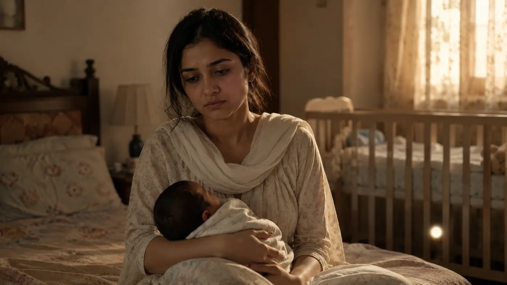

Everyone told her this was supposed to be the happiest time of her life. Her baby was healthy. Her husband was supportive. Her mother-in-law had come to help. And yet, three weeks after giving birth, she could not stop crying — and she did not know why.
She told herself she was being ungrateful. She prayed harder. She smiled at the relatives who came to visit. And late at night, when the baby finally slept, she lay awake feeling something she could not name — a heaviness, a disconnection, a quiet voice asking whether her baby would be better off with a different mother.
If any part of this sounds familiar, this article is written for you. What you are experiencing has a name. It is postnatal depression — and it is neither your fault, nor a sign that you are failing as a mother.
Postnatal Depression in Pakistan: The Numbers
A 2024 systematic review and meta-analysis of 61 studies found that postnatal depression affects between 28% and 63% of Pakistani mothers — with some studies reporting rates as high as 67.96%, approximately four times higher than worldwide averages. Yet the vast majority never receive any treatment.
Sources: Tandfonline — Perinatal Depression in Pakistan: Systematic Review & Meta-Analysis, 2024 | Discover Mental Health — PPD in Punjab, Pakistan, 2025What Is Postnatal Depression?
Postnatal depression (also called postpartum depression or PPD) is a form of clinical depression that develops after the birth of a baby. It is different from the "baby blues" — the brief period of tearfulness and mood swings that many women experience in the first week or two after birth, caused by the sudden hormonal shift after delivery. Baby blues typically resolve on their own within two weeks.
Postnatal depression is more persistent and more intense. It usually develops within the first three months after birth, though it can emerge at any point in the first year. Without support, it does not simply pass.
What It Can Sound Like
Postnatal depression rarely announces itself. In a mother's own head it sounds more like:
- "Sab kehte hain khushi ka waqt hai, phir mujhe kuch mehsoos kyun nahi hota?" Everyone says this is a happy time. Why do I feel nothing?
- "I love my baby, but I don't want to hold her."
- "Main kaisi maa hoon?" What kind of mother am I?
- "If I put him down for a second, something terrible will happen."
- "Everyone would be better off with someone else looking after the baby."
If you recognise yourself, you are not a bad mother. These thoughts are symptoms, and they are common.
Signs of Postnatal Depression in Pakistani Mothers
In Pakistan, postnatal depression often goes unrecognised because its symptoms are dismissed as tiredness, adjustment, or a weakness in character. But these are clinical signs that deserve attention:
- Persistent sadness or tearfulness — crying frequently without a clear reason, or feeling too numb to cry at all
- Difficulty bonding with your baby — going through the motions of caring for the baby but feeling disconnected or emotionally absent
- Overwhelming anxiety — constant fear that something terrible will happen to the baby, or that you are doing everything wrong
- Exhaustion beyond normal tiredness — a bone-deep fatigue that sleep does not relieve
- Loss of appetite or overeating
- Inability to sleep even when the baby sleeps — lying awake with racing thoughts
- Feelings of worthlessness or guilt — believing you are a bad mother, wife, or daughter-in-law
- Withdrawing from family — avoiding interactions, losing interest in people and activities you used to enjoy
- Irritability or anger — snapping at your husband, older children, or in-laws and then feeling intense guilt afterwards
- Thoughts of harming yourself or your baby — this is a medical emergency and requires immediate support
Important: When to Seek Immediate Help
If you are having thoughts of harming yourself or your baby, please do not wait for a therapy appointment. Go to your nearest hospital emergency department, call Rescue 1122 or the police on 15, or tell someone you trust right now. Outside Pakistan, call your local emergency number. You are not a danger: you are unwell, and you deserve care right now.
Why Postnatal Depression Is So Poorly Recognised in Pakistan
A landmark 2024 study published in Frontiers in Public Health examined the barriers to recognising and treating postnatal depression in Pakistan. Several cultural factors came up repeatedly:
1. "Naya bacha Allah ki naimat hai"
A new baby is Allah's blessing. This is true — and it is also true that a mother can feel grateful for her baby and clinically depressed at the same time. These two things are not contradictions. Postnatal depression is not ingratitude. It is a biological and psychological response to one of the most significant events of a human life.
2. The pressure to perform happiness
After a birth, a Pakistani home fills with visitors — relatives, neighbours, family friends. A mother is expected to appear healthy, grateful, and serene. Expressing emotional pain feels like a betrayal of the occasion, and so it goes unexpressed — buried underneath chai and mithai and smiles for photographs.
3. Misidentification as physical illness
Many Pakistani mothers describe postnatal depression as physical symptoms first — chronic headaches, body pain, heart palpitations, loss of appetite. These are recognised as needing attention. The emotional component beneath them is not. A doctor prescribes a tonic or a vitamin. The real cause goes unaddressed.
4. Fear of being labelled "nafsiyati"
The stigma attached to mental health in Pakistan means that acknowledging postnatal depression risks being labelled unstable, or worse, a threat to the baby's wellbeing. This fear — of judgment from in-laws, family, husband — silences women who desperately need support.
The Treatment Gap
A study of Pakistani women with postnatal depression found that 81% felt they needed mental health treatment — but 91% of those women did not seek it. The gap between needing help and receiving it is one of the widest in the world.
Source: PMC — Treatment Gap and Barriers to Mental Healthcare Among Women with PPD in Pakistan, 2024The Role of Chilla — and Its Limits
Pakistan's traditional postpartum practice of chilla — the 40-day period of rest, warmth, and special food following birth — has genuine protective value. Research published in PubMed confirms that chilla is associated with lower rates of maternal depression in women who were not already depressed before birth. The community support, reduced workload, and physical nourishment that chilla provides are genuinely important.
But chilla has limits. It ends at 40 days. Postnatal depression can emerge at 3, 6, or even 12 months postpartum. And chilla does not provide the one thing that postnatal depression specifically needs: a safe, confidential space to speak honestly about what you are actually feeling — without performance, without judgment.
If These Signs Sound Like You
Postnatal depression is treatable, and talking therapy can be done from home while the baby naps. How sessions work, what they cost and how to book are on the page about postnatal depression treatment with Attia.
You Deserve Support Too
A mother who takes care of her own mental health is a better mother. Healing with Attia offers confidential online therapy for postnatal depression in Pakistan — in Urdu and English — with a UK-qualified (CPCAB) integrative psychotherapist who understands your world.
Book a Confidential Session via WhatsApp